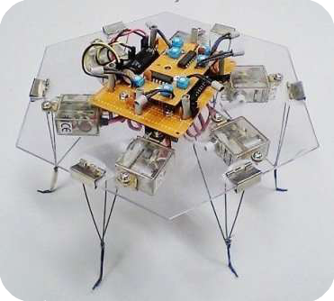

Présentation générale:
De son vrai nom Physarum Polycephalum, le blob est une espèce unicellulaire
(qui n'a qu'une cellule). Il vit sur les souches de bois humides, dans les forêts
de tous les continents. Son surnom de blob vient du film The Blob, un vieux film
d'horreur sorti en 1958. Il a été découvert par le mychologue (scientifique
étudiant les champignons) Lewis David von Schweinitz.
Vous devez vous douter que si on vous parle de cet organisme, c'est qu'il est un peu
spécial ... En effet, il a beaucoup de facultés complètement folles !
Fiche d'identité:
Nom: Physarum Polycephalum
Classe: Myxomycètes/Myxogastria
Ordre: Physarales
Famille: Physaraceae
Genre: Physarum
Couleur (découverte):
Jaune, rose, blanc, marron, rouge
Vitesse de déplacement: 1 à 4 cm/heure
Environnement: lieux sombres et humides
Nombre de sexes (découverts): 720
Cycle de vie:
1ère spécificitée du blob : sa reproduction. Pour comparer, chez les
mammifères, il existe deux sexes : mâle et femelle, là où chez notre
P. Polycephalum il y en a pas moins de 720. Cela signifie qu'il a 719 chances
sur 720 de pouvoir se reproduire avec un autre. Mais d'ailleurs, comment
fait-il pour se reproduire ? Eh bien, il fusionne simplement avec un autre blob
(d'un sexe opposé). Pour que vous compreniez mieux, voici une vidéo :

Blob Fusion - Audrey Dussutour
Pas mal hein ? Et encore mieux, selon une équipe du centre de
recherche sur la cognition animale de l'Université de
Toulouse III, lors de cette fusion, il va transmettre toutes
les informations qu'il a, à l'autre blob.
Bon, revenons-en à notre cycle de vie. Le blob peut aussi se
reproduire tout seul sous certaines conditions. Je m'explique :
lorsque qu'il est privé de nourriture, il va naturellement
former des sporocytes, libèrant ainsi des spores. Ces spores vont
germer et libérer des cellules amiboïdes. Celles-ci vont alors fusionner
et former un nouveau plasmode (blob à l'état "adulte").
Vous trouverez à votre droite un schéma de son cycle de vie.
Une autre faculté dont je ne vous ai pas encore parlé, c'est sa
capacité à survivre aux conditions environnementales défavorables pour
lui (manque de nourriture, environnement sec, lumière trop forte, ...) :
il va entrer en dormance, inanimé. On l'appelle alors sclérote.
Il change de couleur et d'aspect et peut rester dans cet état
plus de 2 ans. Il suffit que son environnement redevienne favorable
pour que le blob revienne à son état normal. Cette faculté fait que
le Physarum Polycephalum est pratiquement immortel !
Déplacement :
Comme vous avez pu le voir sur la vidéo de la fusion entre 2 P. Polycephalum (qui est accelérée) et avec la fiche technique, le blob se répand très rapidement :
ceci est dû à sa
méthode de déplacement. En effet toutes les 2 minutes s'effectue un va-et-vient du flux cytoplasmique. Ce flux est géneré par les contractions
de ses membranes et ce mouvement
provoque alors un déploiement de veines.
En plus de cela, le blob utilise une "stratégie" de déplacement : il ne repasse
jamais au même endroit. En sachant que cette espèce n'est aucunement dotée de cerveau, on
pourrait se demander comment le Physarum Polycephalum arrive à se rappeler où il est déja passé ?
En fait, il n'utilise pas vraiment de mémoire, on parle plutôt de "mémoire
externe". Pour ne pas repasser au même endroit, lorsqu'il se déplace, le blob laisse sur
son passage une substance ayant un effet répulsif. Ainsi il évite d'explorer deux fois
le même endroit et donc de perdre de l'énergie inutilement.
Apprentissage/Habituation :
Voilà encore une autre capacité étonnante du blob, sa capacité d'apprentissage. Pour illustrer, je vais vous présenter une expérience établie encore une fois par
l'équipe du
centre de recherches sur la cognition animale de l'Université de Toulouse III.
L'expérience est simple : sur 9 jours, les scientifiques ont confronté différents plasmodes à la quinine, une substance amère qui n'est pas appréciée par le blob (il
éprouve aussi une
répulsion au sel). La quinine était disposée entre le blob et sa nourriture préférée, l'avoine. Pour parvenir à sa nourriture, il était donc
obligé de la traverser. Il y avait aussi un
plasmode servant de témoin. Au début de l'expérience, le blob confronté à la quinine allait évidement moins vite
que son confrère, mais au bout du sixième jour, celui devant
traverser la quinine, allait à la même vitesse que l'autre, comprenant que cette subtance était
inoffensive. Cette expérience prouve donc que cet organisme est capable
d'apprentissage, ou à proprement-parler d'habituation. Et comme je l'ai mentionné sous
la vidéo de la fusion entre 2 blobs, cette équipe de scientifiques ont aussi découvert
que le P. Polycephalum "entraîné", lors d'une fusion avec un autre,
transmettait son apprentissage. Ainsi, le blob ayant reçu cette information pouvait traverser la quinine
à la même vitesse que le blob "Père".
Autres sujets :
Pour aller un peu plus loin, voilà d'autres petits sujets fascinant sur lui :
Le blob et la robotique :

Vous devez sûrement vous demander : quel rapport, la robotique a avec le Physarum Polycephalum ?
C'est très simple, devinez qui pilote ce robot hexapode (qui a 6 pattes), Eh oui c'est lui, le blob qui le pilote à distance. C'est Klaus-Peter Zauner,
un scientifique de l'université Southampton (Royaume-Uni) qui a conçu ce robot. Il arrive à se déplacer et à s'éloigner d'une source de lumière placée
à proximité. Ses 6 pattes, sont controlées sur un ordinateur à distance. Là, le blob est disposé sur une étoile à six branche et la lumière captée par
capteur sur le robot est retransmise sur l'étoile. Ainsi le P.Polycephalum s'éloigne naturellement de la source lumineuse.